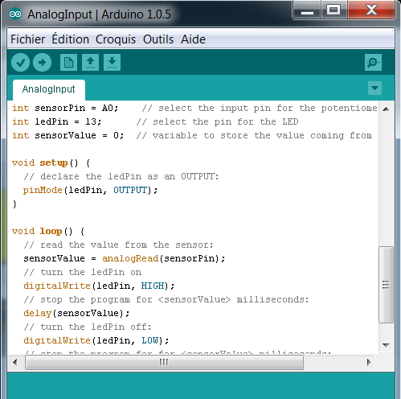

La partie du codage Arduino appartient à Yann sans « copie » de autre codage sur internet. Le codage Arduino ressemble fortement au C++. Tous les codages Arduino se ressemble entre eux en raison de peu de fonction et du format avec toujours les 3 parties : Variables, Configurations Entrées/Sorties et la partie principale en principale en boucle.
